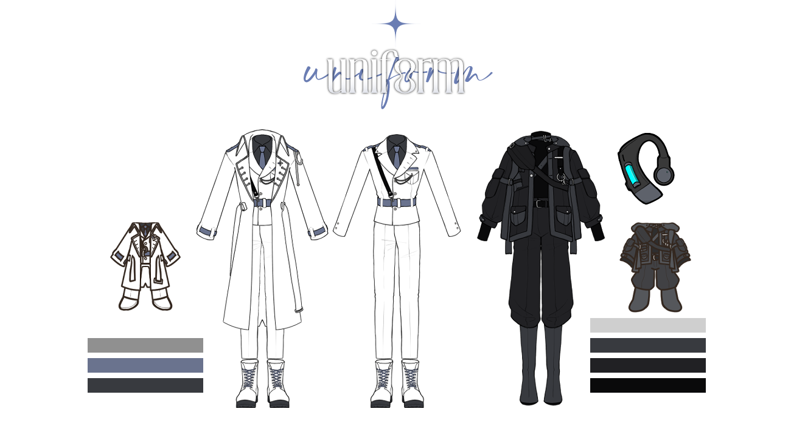

시그마 103년, 12월.
유일 국가 가이아의 건국으로부터 103년 ─
.
.
.
01. 유일 국가 가이아
살아남은 30%의 인류가 크리쳐에게 몰려 영국 영토에 고립되며 103년 전 그 땅 위에 건국한 요새와도 같은 국가. 현재의 영국과 유사하게 사계절이 존재하며 지나친 더위도 추위도 없이 쾌적한 기온을 오가나, 1년 내내 안개가 잦고 변덕스러운 날씨가 특징입니다. 기존의 30%에 불과한 인구수라 해도, 영국 영토로는 그 인구를 감당할 수가 없었습니다. 그렇게 만들어진 가이아의 모습은 땅 아래로 이어집니다. 각 도시 간의 이동은 명확한 방문 목적과 허가가 있으면 어렵지 않게 가능합니다. 다만, 지상도시 내에 존재하는 거주구역은 타 도시 사람들의 접근이 허가되지 않으며 ‘거주지’의 변경은 불가합니다. 대부분의 사람들은 자신이 태어난 도시에서 수명을 다합니다.
특수이능전사단 소속은 가이아 내부라면 출신이 무관합니다. 징집 기준은 오로지 이능력 발현 여부에 달려 있기 때문입니다. 출신지로 인한 차별은 허용되지 않으나 실제로 지켜지고 있는지는 불분명합니다.
☑ 지상도시 : Metropolis
영국의 모습이 그대로 남아 존재하며 자연의 햇빛과 공기를 고스란히 누릴 수 있는 지상도시(Metropolis)는 살아남은 인류 중에서도 가장 부유하고 권력을 지닌 기득권층이 차지했습니다. 정부의 고위 인사이거나 특정 사업을 독차지한 기업의 관계자들 등이 대표적인 예시입니다. 연구기관에서 제조하는 유전자 조작 식품을 바탕으로 좋은 환경에서 자란 좋은 향신료와 건강한 가축들을 통해 값비싸지만 질 좋은 식사를 할 수 있으며 안정적으로 구축된 인프라로 인해 만족도 높은 생활을 할 수 있습니다. 대다수의 국가기관, 굴지의 대기업 등의 건물들은 이곳에 존재합니다.
☑ 반지하도시 : City
그보다 아래로 내려가면, 혁신적인 과학과 기술의 발전을 토대로 구축한 도시의 전경이 펼쳐집니다. 그러나 그 속을 자세히 파헤치면, 반지하라는 환경의 특성상 높은 습도 탓에 빠르게 녹슬고 부식되는 건물들이 보입니다. 또한, 공장에서 발생하는 매연과 지상도시에서 버려진 쓰레기에 의해 부패한 공기로 인하여 1년 내내 스모그 현상이 지속됩니다. 전체적으로 낡은 건물, 축축하고 먼지 낀 공기와 새로운 것들이 혼재되어 있어 어지러운 도시의 모습입니다. 혁신적인 과학기술을 따라가지 못하는 생활 수준을 띄고 있는 이곳은 평범한 생활을 누리며 살아갈 수 있는 중산층의 공간, 반지하도시(City)입니다. 지상에서 공수한 향신료, 생필품, 사치품 등을 비싼 값에 구매할 수 있으나, 대다수의 사람들은 값비싼 지상의 물품을 1년에 한두 번 구매할까 말까 한 수준입니다. 그 탓에 미식을 즐기기보단 유전자 조작 식품으로 단순히 영양소를 채우는 것만이 목적인 식사를 합니다. 특수한 경우를 제외하고 대부분의 연구기관들은 이곳에 존재합니다.
☑ 지하도시 : Town
그보다 더 아래에는, 지하도시(Town)가 존재합니다. 이곳은 지상과 반지하에서 밀려난 이들이 삶을 이어가는 장소로 수많은 이들을 받아들이기 위해 건물들이 틈이 없다시피 빽빽하게 들어선 구조입니다. 조잡하게 쌓인 건물마다 인구는 포화 상태에 다다랐습니다. 내부는 발만 겨우 들일 수 있을 정도의 공간을 골목이라 부를 정도로 엄청난 밀도를 자랑합니다. 지상에서 공수한 물품들이 이곳까지 들어올 수는 있으나 아주 드물뿐더러 매우 비싼 값에 거래됩니다. 이곳도 사람 사는 곳이니만큼 반지하도시에서 가공되는 유전자 조작 식품이 이 지하까지도 내려오지만, 이곳에 거주하는 사람들은 영양소의 균형을 따지기보단 그저 단순히 배를 채우기 급급합니다. 채광을 위한 광산이 주된 산업으로 자리 잡아 대부분 그곳을 일터로 삼고 있으나, 이외에도 범법적인 일들이 만연하고 있습니다. 그러나 이와 관련하여 제대로 된 처벌법이 없는 것이 실상입니다.
02. 사회·문화
☑ 화폐
거주지가 부와 권력에 따라 명확히 나누어진 것만 보아도 알 수 있듯이 여전히 ‘돈’이 가지는 가치는 상당합니다. 가이아에서 사용되는 화폐 단위는 ‘플랫(Flat)’입니다. 특수이능전사단 소속의 군인들은 평균적으로 중상층 이상의 급여를 지급받습니다.
☑ 리인타리움
가이아에서는 화폐보다 더욱 가치 있다 내세워지는 것이 존재하는데, 특이광물 ‘리인타리움’ 입니다. 이능력을 제외하고 유일하게 크리쳐에게 물리적 영향을 줄 수 있는 광물로 밝혀지며 제련 가능한 주괴나 작은 동전 하나가 다이아몬드보다 비싼 값에 거래됩니다. 본디 지하도시의 광산 깊은 곳에서 얻을 수 있었으나 극소량이었던 탓에 오래 지나지 않아 바닥을 내보였고 시그마 60년 이후로는 주 수급원이 가이아 외부로 넘어간 탓에 그 가치가 더욱 상승했습니다.
☑ 과학기술
지하에 온전한 모양새의 도시를 세우고 유지하며 그 안에서 새로이 주식으로 삼을 식재료를 대량으로 가공해 낼 정도로 다양한 과학 기술이 현대보다 조금 더 발전한 상태입니다. 이 작은 낙원에서나마 더 나은 삶을 살길 바라며 기술 발전을 위한 연구가 중요시 여겨집니다. 또한, 크리쳐라는 거대한 위협에 대응하기 위한 연구는 그중에서도 가장 큰 규모로 이루어지고 있습니다. 현재까지 가장 큰 성과는 리인타리움의 활용입니다. 연구원들은 연구기관들이 밀집된 반지하도시에 주로 거주하는데 이들은 그 안에서 최상위의 급여를 받으며 살고 있습니다. 반지하도시 내의 다른 거주자들은 지상 혹은 반지하의 회사에 속해 있거나 내부 치안 유지에 힘쓰는 공직자들, 각 도시 간의 거래를 주도하는 상인 등 꽤나 다양한 업종에 종사하고 있습니다. 지하도시의 거주자들 중에는 작은 회사 혹은 연구소라도 들어가거나 타 도시 사람들에게 개인 경호원, 가사도우미 등으로 고용되는 이들은 상황이 좋은 편입니다. 지하도시 거주자의 과반수는 타 도시로 경제 활동을 하러 넘어갈 기회조차 드물어 하루 먹고 사는 것도 쉽지 않습니다.
☑ 교육
‘인류’를 위해 연구의 중요성이 증가한 만큼 가이아 사회는 인류 생존에 기여할 수 있는 인재가 간절합니다. 그 탓에 배움의 기회는 비교적 공평하게 주어지는 편입니다. 다만, 시간은 공평하나 개인의 배경은 공정하지 않기 때문에 지하도시 거주자들은 타 도시 사람들과 동일한 수준의 교육을 받아도 연구소에 들어가기 어렵습니다. 교육을 받기보다 돈을 버는 편이 개개인이 먹고 살기엔 현명한 선택이기 때문입니다. 각 도시 곳곳에 교육기관이 존재하여 기초교육 4년(기초교육기관), 심화교육 4년(심화교육기관), 고등교육 2년(고등교육기관)으로 총 10년의 교육과정이 일반적입니다. 그중 기초교육과정 4년은 전 인류에게 필수적으로 요구됩니다. 거주지에 무관하게 대다수의 사람들이 필수교육과정을 기본적으로 이수하며 이후 졸업자들은 제각각 경제적 사정과 개인의 의지 등을 고려하여 심화교육 이수를 선택합니다. 고등교육 이수자들 중 과반수는 연구직을 희망하며 그들 중 소수는 심층교육을 2년 이수하여 연구기관의 관리자로 들어가기도 합니다.
☑ 종교
살아남은 인류 중 종교를 가진 이들의 대다수는 최초의 이능력자로 전해지는 소녀, 가이아를 섬기는 ‘구원교’에 속합니다. 구원교는 죄의 처단과 형벌의 집행을 교리 삼아 살아남은 인류만이 결백한 선인들이며 죄지은 이들은 먼 과거 가이아에 의해 처형당했다고 믿습니다. 또한, 현재 크리쳐의 존재가 처형당했어야 할 죄인 중 하나가 도망치며 탄생한 것이라 여깁니다. 현재 직면한 상황이 잔존하는 죄인에 의한 고난 내지는 역경이라 생각하며 이를 이겨내면 구원이 기다린다는 믿음을 갖고 있습니다. 여느 종교가 그렇듯 신자마다 신앙심의 깊이는 제각각입니다. 신자 수가 가장 많은 것은 구원교라는 사실과는 별개로, 개개인이 갖는 종교에 제한을 두고 있지 않으므로 다양한 종교의 양상이 존재할 수 있습니다. 다만, 과거의 기록이 부재하다시피 한 터라 입에서 입으로 전해져 내려오며 현재 실존하는 종교와 유사한 교리를 갖는 종교는 있을 수 있으나 온전히 동일한 종교는 존재하기 어렵습니다.
03. 이능력
이능력(異能力). 인류 일부가 지니는 초자연적이고 특수한 힘을 일컫습니다. 유전의 영향에서 자유롭고 힘의 형태가 상당히 다양하게 나타납니다. 언제부터 사람들이 이능력을 사용하기 시작했는지, 어디서 비롯된 힘인지 알지 못하며 인류는 그저 이능력의 존재를 당연시해 왔습니다. 누군가는 이능력에 대해 의문을 가질 수야 있었겠지만, 이는 개인의 영역입니다.
이능력의 발현은 평균적으로 12세에서 25세 사이에 이루어집니다. 발현 시에는 고통을 동반한 체온 급락 증상이 나타납니다. 발현 이후 반드시 신고해야 하며 주기적으로 전 인류를 대상으로 강제 실행되는 신체검사로 인해 이능력 발현 여부를 1년 이상 숨길 수는 없습니다. 발현 기준 및 원인은 현재까지도 밝혀진 바가 없어 인류에게는 현재 존재하는 이능력자들이 매우 중요한 전력으로 여겨지기 때문에 이능력자에 대한 사항은 정부의 철저한 관리하에 놓여 있으므로 등록되지 않은 이능력자는 존재하지 않습니다. 국가에 등록된 모든 이능력자는 반드시 특수이능전사단에 소속됩니다.
이능력과 관련한 기록은 남아 있지 않으나 전해져 내려오는 이야기에 따르면, 아주 오래 전의 인류는 이능력을 가진 이가 전무했다고 합니다. 그러던 와중 어느 대도시 한복판에서 발생한 전례 없던 대재해로 인해 수많은 사람들이 죽거나 다쳤으며 그 원인은 ‘가이아’라는 이름의 작은 소녀 한 명이었다고 전해집니다. 그것이 이능력의 시초이며 그 소녀가 최초의 이능력자입니다. 그 이후 오래 지나지 않아 소녀의 행방이 묘연해졌으며 소녀의 뒤를 이어 태어난 그 어떤 이능력자도 소녀만큼의 힘을 지니지는 못했다 합니다.
04. 특수이능전사단
인류의 최후 방어선, 유일 국가 가이아의 크리쳐 대항군. 전원 이능력자로 이루어져 있으며 본인의 의사와 무관하게 징집되었습니다.
현재 시그마 103년 12월 25일을 기준으로 기존 4개여단으로 이루어져 있던 규모의 군대는 TML(The Maginot Line)부대 하나만이 남았습니다. 타 부대는 크리쳐에 의해 전멸하였음에 따라 우리는 TML부대 소속이며 살아남은 이능력자들입니다.
부대 내의 구조는 수직적이며 준장이 참모로서 본 작전의 총괄 지휘를 맡고 있습니다. 진급은 철저하게 실적과 진급 시험을 통해 가능하나, 시그마 103년 현재는 암묵적으로 오로지 실적에 따라 이루어집니다. 이외 오로지 시간에 따라 진급하기 위해서는, 소위로 임관한 이후 7개월이 지나면 중위로 진급하며 그 위로 차례로 1년(중위에서 대위), 1년 5개월(대위에서 소령), 1년(소령에서 중령), 1년(중령에서 대령)이 소요됩니다.
특수이능전사단에 소속된 모든 군인들은 도주 방지, 위치 추적, 피로도 감지 및 제어, 생체 활동 감지 등의 다양한 기능을 제공하는 기계 장치 ‘G-011’의 사용이 필수적입니다. G-011은 이어커프의 형태로 귀에 착용하며 한 번 착용한 이후로는 상부의 승인 없이 탈착이 불가합니다.
사관학교를 비롯한 특수이능전사단과 관련된 모든 시설은 지상도시에 존재하나, 이는 단순히 외부 파견 임무를 보다 수월하게 하기 위함입니다. 땅 아래의 사람들보다 질 좋은 생활을 하고 있는 것은 부정할 수 없으나 이것과 맞바꾼 것이 자유와 목숨인 것을 생각해 보면 마냥 좋은 것은 아닐 것입니다.
05. 안내사항
☑ 특수이능전사단은 전원 이능력자로 이루어져 있으며 본인의 의사와 무관하게 징집되었습니다.
1) 전원은 TML부대 소속이며 살아남은 이능력자들입니다.
2) 전원은 시그마 103년 12월 29일에 개시되는 인류 보전을 위한 최후의 작전에 강제 참여하게 되었습니다.
☑ 신청 가능한 계급은 ‘중령 - 소령 - 대위 - 중위 - 소위’로 총 다섯 계급입니다.
1) 중령은 소수 합격 요소입니다.
☑ 이능력은 캐릭터 어필의 용도로 사용됩니다.
1) 다양한 이능력 설정을 지향합니다.
2) 이능력 계열이 같으나 활용 방법이 상이하다면, 설정 겹침으로 판단하지 않습니다.
3) 타인을 정신적 혹은 물리적으로 조작하거나 타인의 이능력 무효화 등 타인의 의지에 간섭하여 영향을 미칠 수 있는 이능력은 허용되지 않습니다.
4) 두 가지 이상의 이능력을 가지고 있다는 설정은 불가능합니다.
☑ 캐릭터에 따라 다양한 설정을 가질 수 있겠으나 타 오너를 불쾌하게 만들 수 있는 것에 관해서는 유의해주시기 바랍니다.

1) 지정복 착용을 지향합니다. 다만, 이는 강제하는 사항이 아닙니다.
2) 본 커뮤니티에 제출하는 나나곰 픽크루(@NUEH_NANA)에 지정복 파츠를 착용 및 외관란에 지정복을 착용하고 있다는 서술이 존재한다면, 제출하는 외관에는 지정복을 착용하고 있지 않아도 무관합니다.
3) 이어커프는 필수 착용 요소로, 외관상 보이지 않더라도 서술이 되어 있어야 합니다.
4) 나나곰 픽크루용 지정복 파츠와 지정복에 사용되는 계급참은 아래 문서를 통해 확인 가능합니다.
5) 계급에 따라 참의 개수가 달라지며, 계급을 나타내는 참은 관찰자 기준 제복 오른쪽 옷깃에 위치합니다.
6) 부대를 상징하는 참의 경우, 보이는 위치에 자유롭게 착용 가능합니다.
7) 지정복 간 혼용 가능하며, 사복 혼용을 허용하지 않습니다.
8) 과도한 리폼은 허용하지 않습니다.